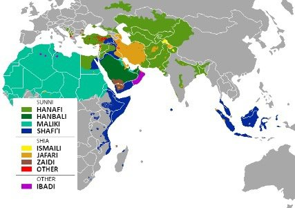

To answer the question lets dig deeper.
Mazhab (more commonly transliterated as madhab, from the arabic مذهب), is a school of Islamic jurisprudence. This term has changed its meaning through the centuries, so before dealing with its current usage I would like to clarify a bit its ancient meaning; when students of Islam used to gather around a great scholar (‘alim) or jurist (faqīh) and follow his verdicts, they became known as that scholar’s school, or madhab. In the early medieval Islamic world there were many madhabs (plur. arabic madhāhib), but for a variety or reasons only four survived: Hanafi Shafi’ī Maliki Hanbali What is the difference among them? Many, from methods used to derive verdicts (or fatāwa) to positions on the reliability of certain sources or scholars. What matters is that, nowadays, most people ascribing themselves to a madhab nonetheless believe in the orthodoxy of the other three. The Muslim population is not divided equally among followers of the four schools, here is a map of the prevalent school in each region:
Nowadays a lot of debate is happening concerning the madhahib; some advocate for the necessity of choosing a school and following, some others propose a different understanding of Islamic jurisprudence based more on the philosophy of law.
Countries with the Largest Number of Muslims
| Country | Estimated 2009 Muslim Population | Percentage of Population that is Muslim | Percentage of World Muslim Population |
|---|---|---|---|
| Indonesia | 202,867,000 | 88.2% | 12.9% |
| Pakistan | 174,082,000 | 96.3% | 11.1% |
| India | 160,945,000 | 13.4% | 10.3% |
| Bangladesh | 145,312,000 | 89.6% | 9.3% |

This collection of essays is disarmingly simple, yet it challenges us to change. To revise our actions, our assumptions and our beliefs so we can be transformed from within, as well as externally. It aims to help modern Muslims maintain a spiritual connection with Allah and to address the challenges facing believers today: the disunity in the Muslim community, terrorists acting in the name of Islam, and the disconnection with Allah. These challenges and more are tackled by Nouman Ali Khan, with his profound engagement with the Qur'an, in his trademark voice that is sought out by millions of Muslims on a daily basis.
Please input this forms to get the book